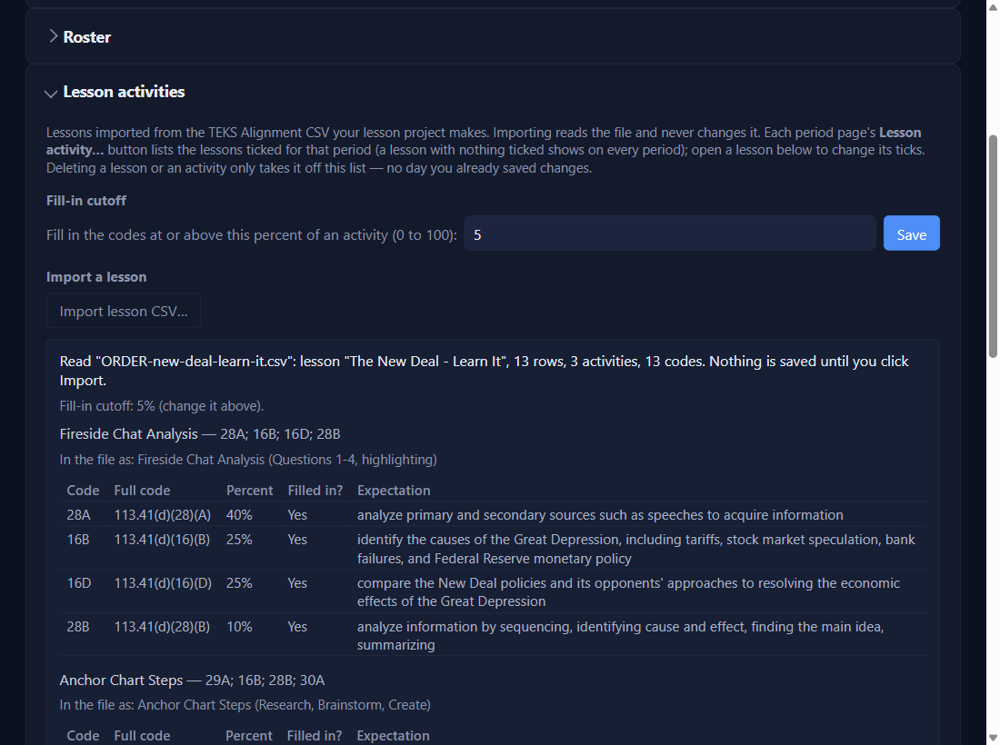
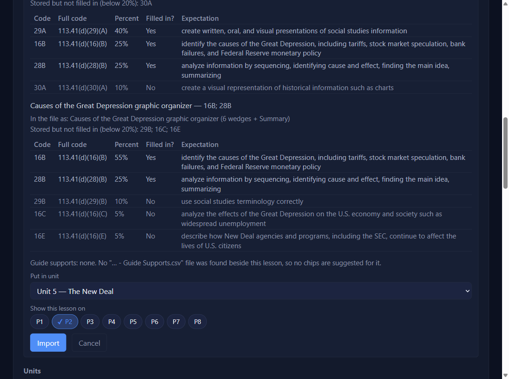
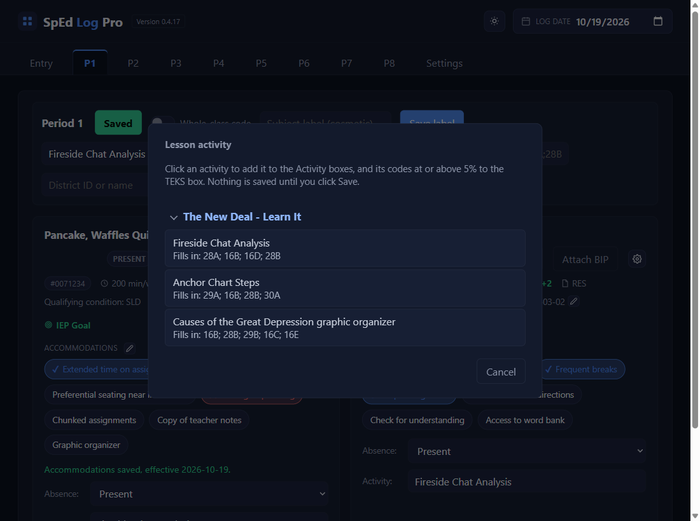
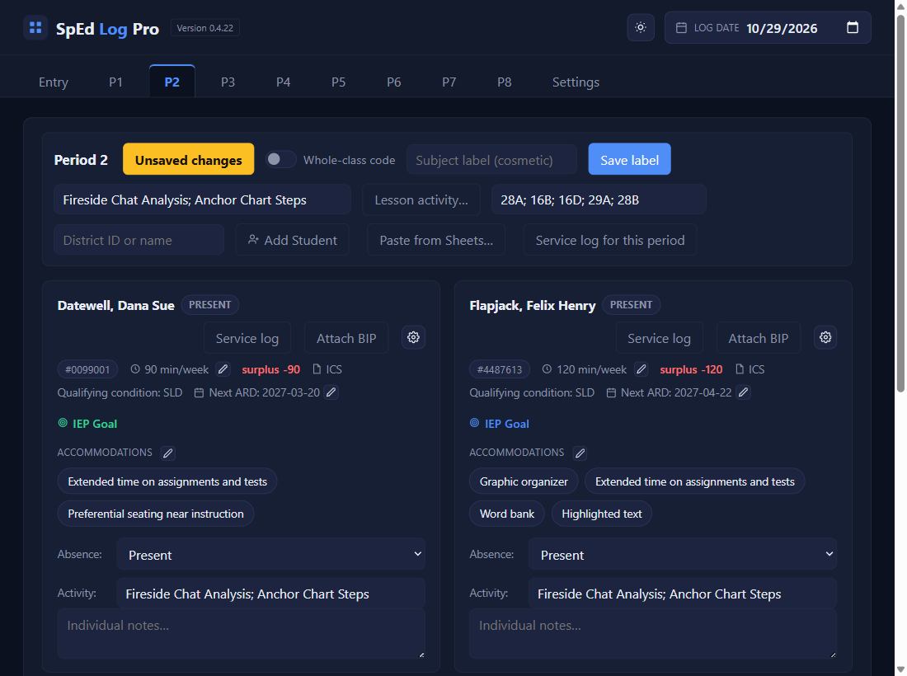

Goals
Import a lesson
⏱ About 4 minutes🔁 Once per lessonYou need: the lesson's TEKS Alignment CSV
Why: your lesson project makes a TEKS Alignment file for each lesson. Import it once, and on the period page you can pick an activity instead of typing the Activity and TEKS. Its codes raise goal alerts exactly as if you'd typed them. Don't have a lesson project yet? See Set up the Leveled Guide BuilderNEWfor version 0.4.18 and beyond; it makes this file. Already using leveled guides? See Leveled guides: set upNEWfor version 0.4.18 and beyond.
1
Settings → Lesson activities → Import lesson CSV…
Pick the lesson's … - TEKS Alignment.csv. A preview shows each activity (brackets removed from the names) and its codes in your short form (113.41(d)(28)(A) becomes 28A).

2
Tick the periods that teach it, then Import
Under Show this lesson on, tick at least one period. You can tick more later under Imported lessons.

3
On the period page: Lesson activity…
Click Lesson activity…, then click the activity. Each shows the codes it fills in.

4
The boxes fill in; check them and Save
The activity is added to the Activity boxes and its codes to the TEKS box. Nothing is saved until you click Save.

✓ You'll know it worked
Imported "The New Deal - Learn It": 3 activities, 13 codes. Shows on P1.- Picking fills the Activity and TEKS boxes.
✕ Avoid these
- No period ticked. Import is refused until one is.
- Expecting it to replace what you typed. It adds after a
;.
⚠ If you see this
Not imported: "…" has 2 problems. Nothing was saved.Each problem is listed by line number. Fix the file and import again.
No lessons for Period … yet.Tick that period for a lesson in Settings → Lesson activities.